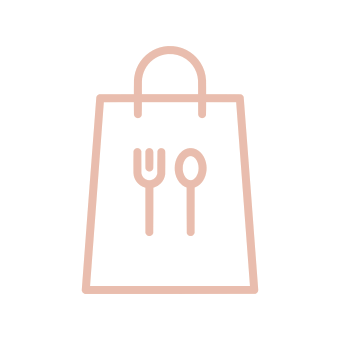

brunch
[ br(eakfast) + (l)unch ]
At Café Déjeuner, we pride ourselves on our ability to offer you fresh, organic, and authentic French/American-inspired food. All of our produce is sourced from Locally Grown, and our bakery serves fresh pastries and breads every day. Join us for brunch.
Breakfast Special
Strawberry Stuffed French Toast
Brunch Special
Ciabatta Breakfast Sandwich with Garden Salad
Lunch Special
Rosemary Chicken Avacado Wrap
Dine out or dine in!

Order takeout or delivery